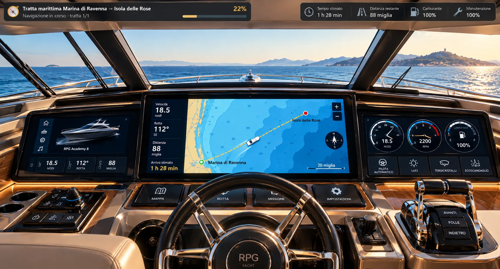

🪙 CREDITI—
⭐ PRESTIGIO—
⛽ CARBURANTE—
🔧 STATO—
🛥️ CARICAMENTO PLANCIA
Preparazione GPS…
DISTANZA RIMASTA— NM
ARRIVO STIMATO—
AVANZAMENTO—

🌊 VISTA MAREGPS · IN PORTO
VELOCITÀ—nodi
DIREZIONE—gradi
STATO—barca
🧭 CARTA NAUTICA IN TEMPO REALE
— NMSegui la tua imbarcazione
GPS nautico
Caricamento carta…
● GPS LIVE—
Posizione sincronizzata con la missione
Tocca + o − per zoomare la carta grande; ⌖ segue la barca. Tocca il monitor della plancia per ingrandire.
Evento in navigazione
Le operazioni di rifornimento e manutenzione sono disponibili quando l'imbarcazione è in porto.